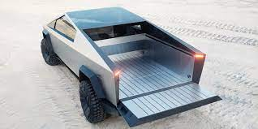

- This article shows the achievments of a modern electric car as compared with internal combustion cars.
- It describes the history of this firm, provides technical and tactical characteristics of three modifications of electric vehicles produced by Tesla Motors.
- Modern electric cars are not less powerful than cars with combustion engines both in speed and acceleration amount.
- They are reliable, economical and safe in operation. With every year the maximum range of an electric car is increasing and its battery charging time is decreasing.
Founded as Tesla Motors,Tesla was incorporated on July 1, 2003, by Martin Eberhard and Marc Tarpenning.
Ian Wright was Tesla's third employee. The three raised US$7.5 million in series A funding in February 2004 from various investors.
Following the investment, Musk joined the company and became chairman of the board of directors.
J. B. Straubel joined Tesla in May 2004.
A lawsuit settlement agreed to by Eberhard and Tesla in September 2009 allows all five – Eberhard, Tarpenning, Wright,
Musk and Straubel – to call themselves co-founders.
- The Model S is a five-door liftback sedan. Began on June 22, 2012.
The car became the first electric vehicle to top the monthly sales ranking in any country,
when it achieved first place in the Norwegian new car sales list in September 2013.
- The Model S won the 2013 Motor Trend Car of the Year,
the 2013 World Green Car, Automobile magazine's 2013 "Car of the Year "Time magazine's Best 25 Inventions of the Year 2012 award,
as well as the 2019 Motor Trend "Ultimate Car of the Year".
- The Model S was the best-selling plug-in electric car worldwide for the years 2015 and 2016,
selling an estimated 50,931 units in 2016. By the end of 2017,
it listed as the world's second best selling plug-in electric car in history after the Nissan Leaf,
with global sales of 200,000 units.
- In June 2020, Tesla announced that the Model S Long Range Plus had an EPA range of 402 miles (647 km),
the highest of any battery electric car at the time.

- The Model 3 is a four-door fastback sedan. Tesla unveiled the Model 3 on March 31, 2016.
- One week after the unveiling, Tesla reported over 325,000 reservations.
- Claimed “ the Model 3's unveiling was unique in the 100-year history of the mass-market automobile“.
- Since March 2020, The Model 3 is the world's best selling electric car in history,
and global sales since inception totaled more than 810,000 units through December 2020.
- The Tesla Model 3 has ranked as the world's best selling plug-in electric car for three consecutive years, from 2018 to 2020,
and also as the best selling plug-in electric car in the United States since 2018.
- The Model 3 also set records in Norway and the Netherlands,
listing in both countries as the best selling passenger car model in the overall market in 2019.

- The Tesla Model X is a mid-size crossover SUV. It is offered in 5-, 6- and 7-passenger configurations.
- The passenger doors are articulating "falcon-wing" designs that open vertically.
- The Model X was developed from the full-sized sedan platform of the Model S. Started in September 2015.
- After one full year on the market, in 2016, the Model X ranked seventh among the world's best-selling plug-in cars. .
- The United States is its main market with an estimated 57,327 units sold through September 2018.

1:Cybertruck
- The Cybertruck is a light duty truck unveiled on November 21, 2019, with production set for late 2021.
- On September 22, 2020,.The truck's angular design had a mixed reception.
- After the Cybertruck's unveiling, Musk announced that the Tesla Cyberquad, an electric four-wheel quad bike revealed alongside the Cybertruck,
would be an optional accessory for Cybertruck buyers in 2021.

2:Tesla Semi
- The Tesla Semi is an all-electric Class 8 semi-trailer truck announced in November 2017.
- Musk confirmed that two variants would be available: one with 300 miles (480 km) and one with 500 miles (800 km) of range.
- The Semi will be powered by four electric motors of the type used in the Tesla Model 3
and will include an extensive set of hardware sensors to enable it to stay in its own lane, a safe distance away from other vehicles,
and later, when software and regulatory conditions allow, provide self-driving operation on highways.